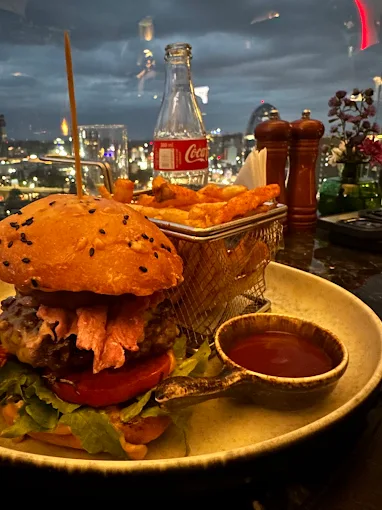
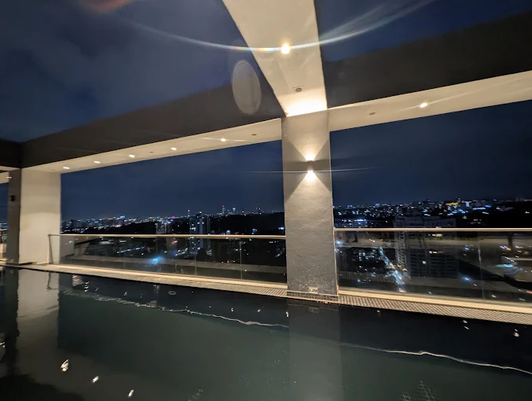
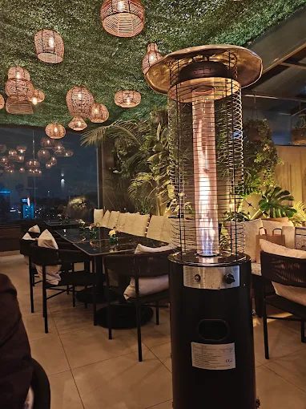
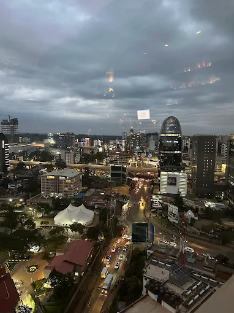
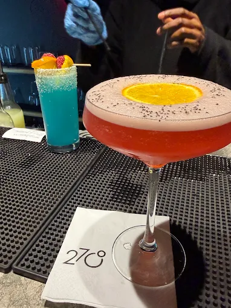
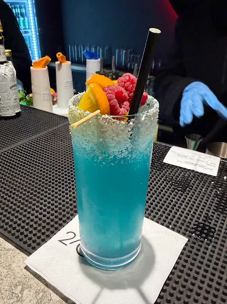
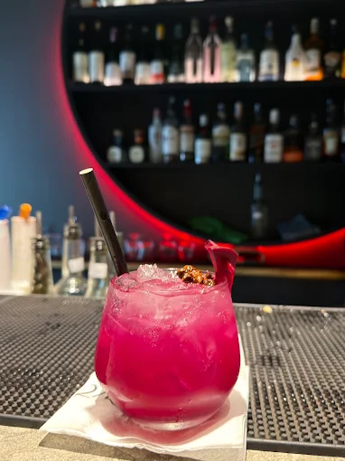
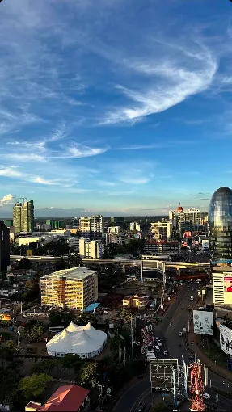
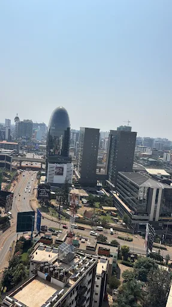
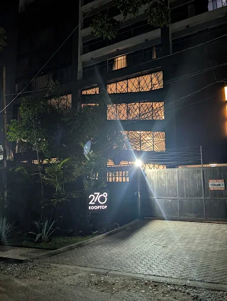

House favourite

18th Floor · Escada · Westlands
Skyline dining, signature cocktails and a rooftop atmosphere designed for sunsets, celebrations and unforgettable nights.
The rooftop experience
At 270° Rooftop, the view is part of the experience. The room moves from calm morning coffee to golden-hour dining and late-night cocktails.
This concept turns that transition into a reservation-focused digital journey.


At the bar
Bright colours, fresh fruit and premium presentation make the cocktail programme part of the night.



From daylight to city lights



Plan your visit
Lantana Road, Westlands, Nairobi
Call ahead for tables and groups.
Confirm current hours directly.